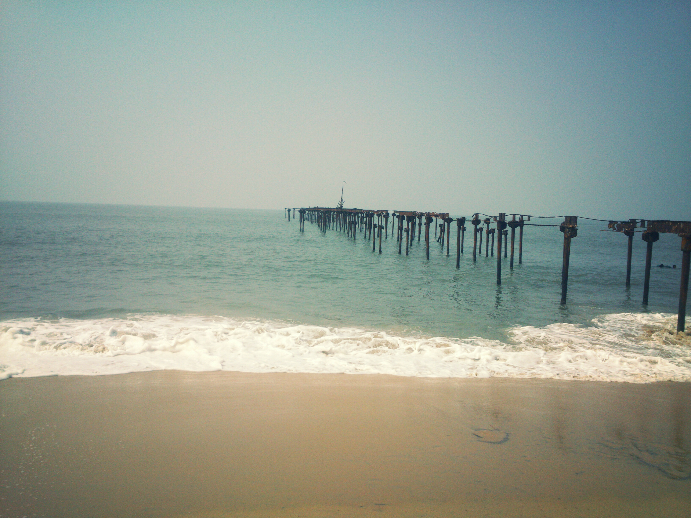

-

ALLEPPEYBACKWATERS
One night cruise on the backwaters of the Alappuzha is one of the most popular cruises offered. A round trip, in which you board the boat at Alappuzha and disembark at Alappuzha after having spent the night in the tranquility of the Backwaters.
The cruise takes you through the clear waters of the prominent Punnamada Lake – the venue of the legendary Nehru Trophy Snake Boat Race. You can visit the 400 year old Champakkulam church, one of the 7 churches established by St. Thomas. The Chavara Bhavan, located 6 km from Alleppey , is another interesting place that one can't affoed to miss. The ancestral home of the Blessed Kuriakose Elias Chavara, the Chavara Bhavan houses the legendary 250 year old beacon of light – preserved intact in its original and primitive form.
-

ALAPPUZHA BEACH
Alappuzha beach is one of the major tourist spot in Alappuzha town. Alappuzha Lighthouse situated near to the beach. Beach is accessible through various town roads and an elevated highway will passing by the beach as part of Alappuzha bypass in order to preserve the beauty of the area. Camel safaris was another attraction in beach which introduced a couple of years ago but it got banned by authorities.
-
ALAPPUZHA LIGHT HOUSE
The Alappuzha Lighthouse (or Alleppey Light) is situated in the coastal town of Alappuzha, Kerala. It was built in 1862 and is a major tourist attraction. Visitors are allowed between 1500 hours and 1630 hours on every weekday at an admission fee of 20 rupees for Indian citizens and 50 rupees for foreigners. This is the first of its kind in the Arabian sea coast of Kerala.